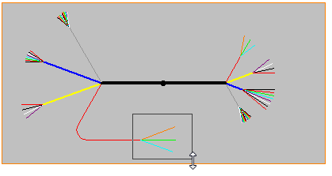
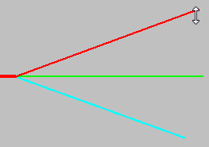
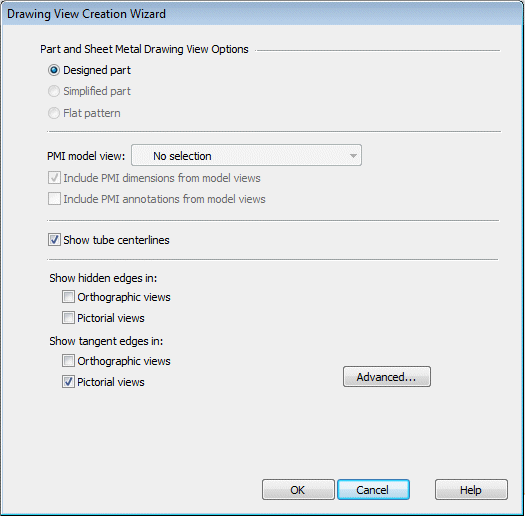
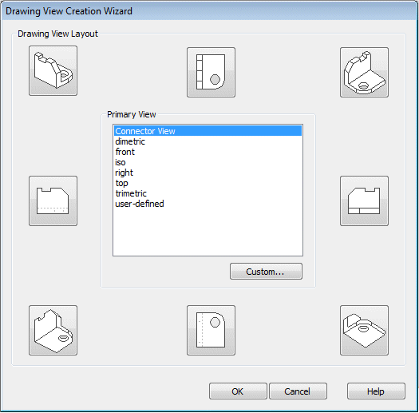
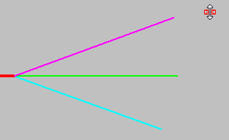
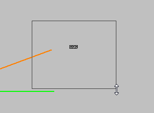
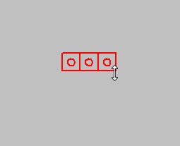
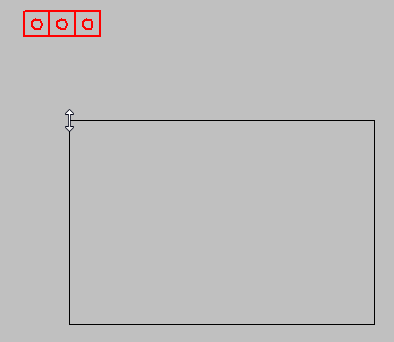
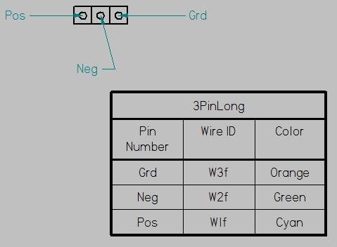

Activity: Creating a connector view and connector table
This activity guides you through the creation of a connector view based on information associated with the harness. You will then use the information in the connector drawing view to create a connector table.
Click the File tab → Open → Browse.
In the Open File dialog box, set the Look in: field to the folder where the activity files were downloaded.
Click nailboard_activity_2.dft and then click Open.
Click the Zoom Area button , and define a zoom area around the conductor as shown in the illustration.

Click the Diagram tab→Views group→Connector command .
Click the conductor shown in the illustration.

Click the Drawing View Wizards Options button.
In the Drawing View Creation Wizard, set the options as shown, and then click OK.

On the command bar click the Drawing View Layout button and on the Drawing View Creation wizard, ensure the Primary View is set to Connector View and click OK.

Drag the cursor to the approximate location shown in the illustration and click to place the view.

Click the Zoom Area button , and define a zoom area around the conductor as shown in the illustration.

Click the Diagram tab→Tables group→Connector Table command .
Click the connector view.

Drag the cursor to the approximate location shown in the illustration.

Click to place the connector table.

Click the Fit button.
This completes the activity. Close the draft document without saving. Proceed to the activity summary.
In this activity you created a connector view based on a conductor found in a nailboard view. You then created a connector table based on the connector view.
Click the Close button in the upper-right corner of the activity window.